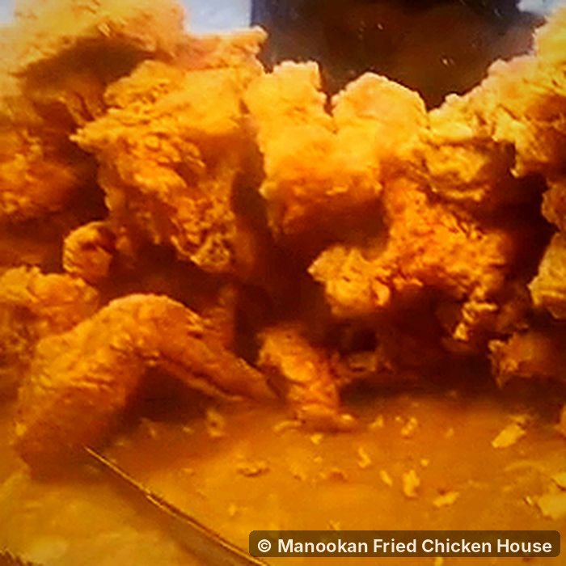

Fried Chicken Internal Temperature: How to Know It's Done
Fried chicken is safely cooked when the thickest part of the meat reaches 74 °C (165 °F) on a food thermometer. Measure in the thickest part of each piece, close to the bone but not touching it. The color of the crust, the color of the juices and the cooking time are all useful clues, but none of them prove the chicken is safe the way a thermometer reading does.
This guide covers where to put the thermometer for each part, typical frying times, why chicken can look pink and still be safe (or look done and still be raw), and how to check without a thermometer if you have to.
At our stall on Gorordo Avenue, every piece goes onto the tray only once it's cooked through to the bone. Bone-in chicken is the hardest thing to get right at home, because the outside can look perfect long before the middle is ready.

Quick answer: temperatures to know
| What | Temperature | Why it matters |
|---|---|---|
| Cooked chicken, any part | 74 °C (165 °F) | The safe minimum recommended by the USDA for all poultry |
| Reheated leftovers | 74 °C (165 °F) | Same target when warming cooked chicken again |
| Thighs and drumsticks (for texture) | 80–85 °C (175–185 °F) | Optional: dark meat gets more tender at a higher temperature |
| Keeping cooked chicken hot | 60 °C (140 °F) or above | Below this, bacteria can start to grow again |
| Frying oil | 160–175 °C (320–350 °F) | Hot enough to crisp, gentle enough to cook bone-in pieces through |
Why 74 °C (165 °F)?
Raw chicken often carries bacteria such as Salmonella and Campylobacter, two common causes of food poisoning. Heat kills them, and 74 °C is the temperature at which they are destroyed almost instantly. That's why food-safety agencies use it as the single, simple target for all chicken, whether it's fried, grilled or roasted.
The number applies to the meat, not the oil and not the crust. The crust of a drumstick can be over 100 °C while the meat next to the bone is still under 60 °C. That's the whole reason home fried chicken is tricky.
Where to put the thermometer
Always measure the thickest part of the meat, because it's the last part to heat up. Push the probe in from the side so the tip ends in the center of the thickest section.
| Piece | Where to measure | Tip |
|---|---|---|
| Breast (bone-in) | Thickest part, near the rib bone | Usually the slowest piece to cook. Check it first. |
| Thigh | Center of the meat, beside the thigh bone | Dark meat is forgiving; it stays juicy at higher temperatures. |
| Drumstick | Thickest part near the top, next to the bone | Measure from the side, not straight down. |
| Wing | Thickest part of the flat or drumette | Small and quick; often done first. |
Don't touch the bone
Bone heats differently from meat and can give you a false reading. If the probe touches bone, pull it back slightly and read again.
Check more than one piece
Pieces in the same batch cook at different speeds depending on size. Check the biggest piece in every batch. If it's at 74 °C, the smaller ones almost certainly are too.
How long does fried chicken take to cook?
These are typical times for bone-in pieces in oil held at 160–175 °C. Size, starting temperature and how many pieces share the pot all change the time, so use these to plan and the thermometer to decide.
| Piece | Typical frying time |
|---|---|
| Wing | 8–10 minutes |
| Drumstick | 12–15 minutes |
| Thigh | 12–15 minutes |
| Breast (bone-in) | 14–18 minutes |
| Boneless strips or nuggets | 4–6 minutes |
If the crust is getting too dark before the meat is ready, your oil is too hot. Lower the heat, or use the double-fry method from our guide to making extra-crispy fried chicken at home: cook through gently first, then crisp at high heat for a minute or two.
Carryover cooking: take it out a little early?
Chicken keeps cooking for a few minutes after it leaves the oil, as heat from the hot outside moves inward. The center usually climbs a few degrees while it rests on the rack.
Some cooks pull pieces out a few degrees early and let the rest finish the job. If you do, check the temperature again after resting. At home, the safest habit is simple: take it out when the thickest part reads 74 °C, then let it rest 5 minutes. You'll lose very little juiciness and remove the guesswork.
Pink near the bone: is it undercooked?
Not necessarily. Chicken that has reached a safe temperature can still be pink or reddish near the bone, especially in drumsticks and thighs from young chickens. Pigment from the bone marrow can seep into the surrounding meat during cooking and stain it, and some chemical reactions in the meat also keep it pink.
The opposite is also true: meat can turn white before it has reached a safe temperature. That's why color is not a reliable test in either direction. If the thermometer says 74 °C, it's safe, whatever the color. If it's pink and the meat looks glossy, translucent or jelly-like at the bone, it isn't done.
Do the juices need to run clear?
"Juices run clear" is a common rule of thumb, and clear juices are a good sign. But juice color can change before the meat is safe, and juices can stay pinkish in fully cooked chicken. Treat it as a clue, not a guarantee.
How to check without a thermometer
A thermometer is the only reliable test, and a basic digital one costs far less than a bad case of food poisoning. If you really don't have one, use several of these signs together, never just one:
- Cut the thickest piece to the bone. The meat should be opaque all the way through, with no glossy, raw-looking flesh at the bone.
- Check the joint. A drumstick that's cooked through moves loosely in its joint and the meat starts to pull away from the bone.
- Firmness. Cooked meat feels firm and springs back. Raw meat feels soft and squishy.
- Steam. When you cut a cooked piece open, it should steam strongly from the center.
If you're unsure, put it back in the oil for a few more minutes. Overcooked chicken is disappointing; undercooked chicken can make people sick.
Choosing a food thermometer
| Type | Speed | Best for |
|---|---|---|
| Digital instant-read | 2–5 seconds | Best all-round choice for fried chicken |
| Thermocouple | 1–3 seconds | Very fast and accurate; costs more |
| Dial instant-read | 15–20 seconds | Cheap, but slow and harder to read |
| Clip-on deep-fry thermometer | Continuous | Measures the oil, not the chicken. Useful alongside a probe. |
Check that your thermometer is accurate
Fill a glass with ice and a little cold water, stir, and wait a minute. Put the probe in the middle without touching the glass. It should read 0 °C (32 °F). If it's off by more than a degree or two, recalibrate it if it allows, or adjust your readings by the difference.
Keep it clean
Wash the probe with hot soapy water after testing raw or partly cooked chicken, so you don't carry bacteria back into cooked pieces.
Reheating: the same 74 °C rule
When you reheat leftover fried chicken, warm it until the thickest part is steaming hot and reaches 74 °C. Our guide to reheating fried chicken so it stays crispy has times and temperatures for the air fryer, turbo broiler, oven, pan and microwave.
Fried chicken temperature FAQ
Is 160 °F (71 °C) safe for chicken?
The standard home-cooking target is 74 °C (165 °F). Professional kitchens sometimes cook chicken to a lower temperature and hold it there for a set time, but that needs precise equipment and timing. At home, stick with 74 °C.
Is it safe to eat chicken that's slightly pink?
If a thermometer shows it reached 74 °C, yes, even if it's pink near the bone. If you didn't measure it and the meat looks raw or glossy, cook it longer.
Why is my chicken burnt outside but raw inside?
The oil is too hot. The crust browns before heat can reach the center. Fry at 160–165 °C until cooked through, then crisp it briefly at a higher temperature.
Can I use an oven thermometer to check the chicken?
No. Oven and oil thermometers measure the air or oil around the food. You need a probe that goes into the meat.
Should thighs be cooked hotter than breasts?
For safety, both only need 74 °C. For texture, many cooks prefer thighs and drumsticks around 80–85 °C, where the connective tissue softens and the meat becomes more tender.
Key takeaways
- Fried chicken is safe at 74 °C (165 °F) in the thickest part of the meat.
- Measure from the side, near but not touching the bone, and check the biggest piece in each batch.
- Color and juices are clues, not proof. Pink near the bone can be safe; white meat can be underdone.
- Burnt outside and raw inside means the oil is too hot.
- Reheat leftovers to 74 °C too.
Would rather leave the thermometer in the drawer? If you're near Gorordo Avenue, every piece on our tray is cooked through to the bone, and every part is ₱25.